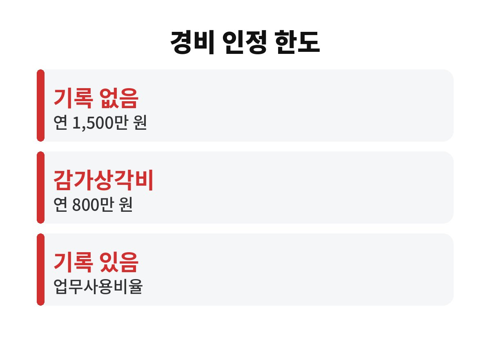

업무용 승용차 비용처리는 복식부기의무자 기준으로 운행기록부를 쓰지 않으면 연 1,500만 원까지만 경비로 인정됩니다.
차 한 대에 들어간 유류비, 보험료, 수리비, 감가상각비를 합친 금액에 이 한도가 적용되므로, 차량 비용이 큰 사업자일수록 기록 여부에 따라 신고 소득이 달라집니다.
이 제도에서 말하는 업무용 승용차는 개별소비세가 붙는 8인승 이하 승용차입니다.
화물차나 9인승 이상 승합차, 경차 일부 등은 별도 기준이어서 같은 한도가 적용되지 않습니다.
또 간편장부 대상자는 이 특례의 직접 적용 대상이 아니고, 복식부기의무자가 주된 대상입니다.
자동차등록증의 차종 칸에서 승용으로 되어 있는지 보면 됩니다.
차량 명의가 본인이 아니라 배우자나 가족이면 사업용 비용으로 인정받기 어렵습니다.
리스나 렌트 차량은 임차료도 같은 한도 안에서 계산하므로 계약서의 월 납입액을 따로 모아 둡니다.
리스 차량은 감가상각비 대신 임차료 중 감가상각에 해당하는 부분이 800만 원 한도로 계산됩니다.
월 납입액 안에 보험료와 세금이 섞여 있는 계약도 있어서, 계약서에서 항목을 나눠 적은 부분이 있는지 확인합니다.
이 구분이 없으면 세무서에서 비율로 나눠 보는 경우가 많습니다.
2026년 기준으로 차량 관련 비용은 감가상각비, 임차료, 유류비, 보험료, 수리비, 자동차세, 통행료, 주차비를 모두 포함합니다.
이 합계가 1,500만 원 이하이면 운행기록부가 없어도 전액 인정되고, 넘으면 기록한 업무사용비율만큼만 인정됩니다.
감가상각비는 별도로 연 800만 원이 상한입니다.
| 구분 | 운행기록부 작성 | 운행기록부 미작성 |
|---|---|---|
| 연 차량 비용 1,500만 원 이하 | 업무사용비율만큼 인정 | 전액 인정 |
| 연 차량 비용 1,500만 원 초과 | 업무사용비율만큼 인정 | 1,500만 원까지만 인정 |
| 감가상각비 | 연 800만 원 한도 | 연 800만 원 한도 |

예를 들어 한 해 차량 비용이 2,000만 원인데 업무사용비율이 80%라면 기록이 있을 때 1,600만 원이 인정됩니다.
기록이 없으면 같은 해에 1,500만 원에서 멈춥니다.
다만 업무 외 사용이 많아 비율이 낮게 나오는 차량이라면 오히려 기록을 쓰는 쪽이 인정액을 줄일 수 있습니다.
복식부기의무자는 일정 대수 이상의 업무용 승용차에 업무전용자동차보험을 가입해야 합니다.
가입하지 않으면 해당 차량 비용이 한도를 따지기 전에 전액 인정되지 않는 구조라서, 보험 가입 여부는 비용 계산보다 먼저 봅니다.
가입 대상 대수와 시점은 사업자 유형에 따라 다르므로 홈택스 안내나 세무서에서 본인 기준을 확인하시기 바랍니다.
운행기록부는 한 해가 끝난 뒤 기억에 의존해 채우면 거리계 수치가 맞지 않아 조사 때 지적받기 쉽습니다.
스마트폰 앱이나 차량 단말로 자동 기록되는 방식을 쓰더라도 최종 출력본을 보관해야 합니다.
차를 중간에 팔면 처분손실이 생기는데, 이 금액도 연 800만 원 한도 안에서 나눠 인정됩니다.
한도를 넘는 부분은 다음 해로 넘겨 계산하므로, 매각 계약서와 매각 금액이 찍힌 서류를 신고 후에도 보관합니다.
이번 달 안에 할 일은 한 가지입니다.
올해 차량 비용을 카드 내역에서 합산해 1,500만 원을 넘는지부터 확인합니다.
넘는다면 운행기록부를 이미 써 둔 상태인지 점검하고, 신고 방식이 헷갈리면 신고 전에 세무서나 세무 전문가에게 문의하시기 바랍니다.
※ 본 글은 2026년 기준 공개 자료를 바탕으로 정리한 정보이며, 세금·금융 상품 선택은 본인 상황에 맞게 전문가와 확인하시길 바랍니다.